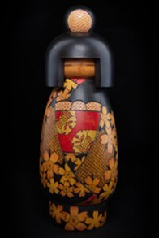

Yayoi là tác phẩm thuộc dòng Kindai Kokeshi Ningyō – búp bê Kokeshi hiện đại, phát triển từ nghệ thuật Kokeshi truyền thống của vùng Đông Bắc Nhật Bản. Tên gọi "Yayoi" là tên cổ của tháng Ba, tháng mở đầu mùa xuân theo lịch truyền thống Nhật Bản, tượng trưng cho sự đâm chồi, nảy lộc và sức sống mới của thiên nhiên.
Tác phẩm được chế tác từ gỗ nguyên khối với hình dáng mềm mại, phần thân nổi bật bởi hình ảnh thiếu nữ trong bộ kimono rực rỡ được bao quanh bởi những họa tiết hoa anh đào. Sự kết hợp giữa màu gỗ tự nhiên, sắc đen và các gam màu tươi sáng tạo nên vẻ đẹp thanh lịch, đồng thời thể hiện kỹ thuật sơn và vẽ thủ công tinh xảo của các nghệ nhân Nhật Bản.
Trong văn hóa Nhật Bản, mùa xuân là biểu tượng của khởi đầu, hy vọng và sự tái sinh. Thông qua hình tượng Yayoi, tác phẩm tôn vinh vẻ đẹp của thiên nhiên, sự chuyển mình của bốn mùa và triết lý sống hài hòa với tự nhiên – một giá trị cốt lõi trong văn hóa và nghệ thuật truyền thống Nhật Bản.
弥生は近代こけし人形の作品で、東北地方の伝統こけしから発展したものです。「弥生」は旧暦三月の呼び名で、日本の伝統暦では春の始まりの月にあたり、草木が芽吹き、自然が新たな生命力に満ちる季節を表します。
本作は一本の木から作られた柔らかなフォルムで、胴には鮮やかな着物姿の少女と、それを取り囲む桜の文様が描かれています。自然の木肌、黒、そして明るい色彩の組み合わせが上品な美しさを生み、日本の職人による精緻な塗り・手描きの技を示しています。
日本文化において春は、始まり・希望・再生の象徴です。弥生という題材を通して、本作は自然の美しさ、四季の移ろい、そして自然と調和して生きるという、日本の文化と伝統芸術の根幹にある価値観をたたえています。